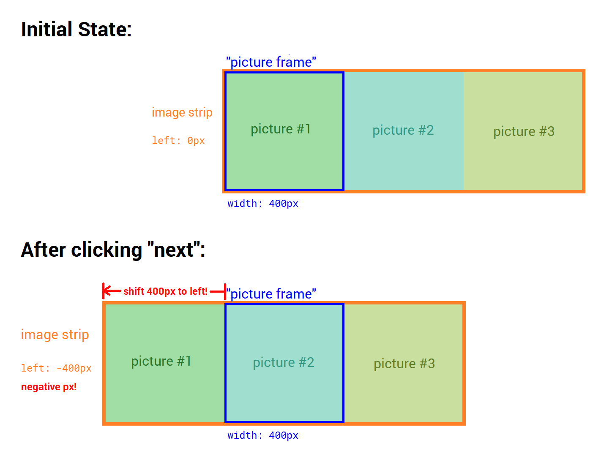
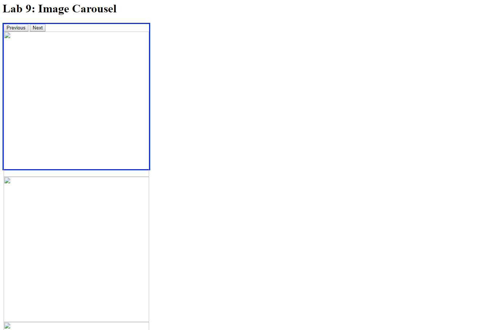
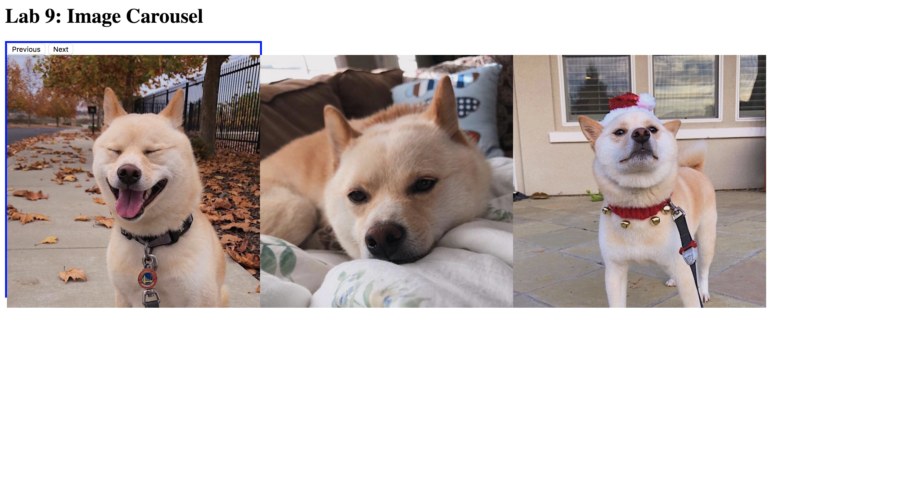
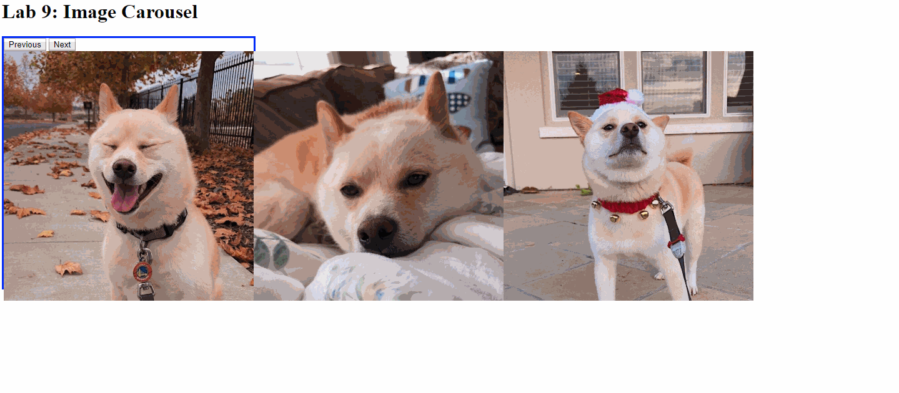

We're going to create this image slider, similar to the ones on Instagram!

How does the image sliding work? Imagine a horizontal strip of images and a "picture frame". When you click on one of the buttons, the image strip is moving to the left or right, changing the image currently in the "picture frame".
Okay, that brings us to the next thing to think about. What does it mean for the image strip to "move left or right"? Consider how to achieve this with CSS. This effect translates to using CSS position properties. If we change the left offset for the div that contains the row of images, then that will shift the strip left and right.

Finally, how do we know what to change the image row position to? In our CSS, we picked the dimensions for the "picture frame," and also made our images that same size. In our JavaScript, if we keep track of the image we are currently displaying, then the total offset amount would be width of image × how many images from the left.
For example: Suppose we know we're currently on image #2 and that each image is 400px wide. To display the next image, we know it is image #3. 400 pixels × 2 images = 800 pixels to the left. This is a negative number if you think of the left edge of the frame as zero! So we would set the CSS to left: -800px;.
With this in mind, let's further translate these ideas to code!
Open index.html, and it should look pretty bare, like this:

In our HTML, <div id="carousel"> is our "picture frame" which is shown by the blue box. <div id="carousel-image-row"> is the div that has the images, and will become our image strip that we shift.
-
We've provided three pictures of Diana's doggo in
assets/images! Fill in theimgtags inindex.html. -
We need the images in a row to create the image strip we described in Part 0. Add CSS to do this in
style.css.Hint: flexbox -
The image strip will be offset relative to the left edge of the "picture frame." Add two lines of CSS: the appropriate CSS
positionrule to#carousel-image-row, and alsoleft: 0pxwhich is where it starts out initially.

Reminder that JavaScript is not Java, and some people will get very confused if you use these terms interchangeably. We are working with JavaScript in this class!
Open script.js. We are going to be doing more of what we've already covered in class and homework. If you need any refresher, here are the relevant slides:
- creating variables
- using
document.getElementById - defining functions
- setting the
onclickfunction - adding and removing css classes
- changing individual css
- using if-statements
Let's remember our logic again. Remember that when we write JavaScript, we are translating English into very distinct steps that computers can understand. Right now, this is what we want to accomplish:
- when the user clicks on the Next button, run code that will shift the image strip to the left by changing the image strip CSS.
- when the user clicks on the Previous button, run code that will shift the image strip the right by changing the image strip CSS.
Okay let's do this!
-
The relevant HTML elements that we'll have to refer to are the two buttons and the image row div. Set up the
prevButton,nextButton, andimageRowvariables that have already been partially created in the file. -
As explained in Part 0, we need to keep track of which image we're on. Create a variable called
imageNumthat starts at0, since there are zero images to the left of the very first one. -
Let's create a function,
showNextImage, that contains the code to run when the Next button is clicked on.- Change the value of
imageNum. - Given the variable
carouselWidthwhich contains the image width in pixels, andimageNum, calculate how many pixels from the left the image row needs to be. Store this calculation in a variable. - The final step to show the next image is to actually change the CSS. We need to set the
leftCSS property to a string like"250px"(but use the variable you just created, not 250).Hint: Do element.style.left = something;
- Change the value of
-
Change the
onclickproperty fornextButtonso that when you click on the Next button, theshowNextImagefunction will be called by the browser.Hint: Do element.onclick = something;At this point refreshindex.html, and make sure you should have something like this:  -
Fill in
showPrevImagesimilar toshowNextImage, except: how doesimageNumchange this time? -
Change the
onclickproperty forprevButtonso that when you click on the Previous button, theshowPrevImagefunction will be called by the browser. At this point, refreshindex.html, and make sure both buttons work. -
You might have noticed a problem: we can keep clicking and the image strip will keep moving past the first image, or move past the last image! We don't want this behavior!
Our solution: When we are at the first image, hide the Previous button. When we are at the last image, hide the Next button. Otherwise, don't hide the buttons. There is a provided skeleton if-statement thecheckControlsfunction. First delete/*on line 42 to uncomment the function!
Fill in the blanks to add or remove the provided.hiddenCSS class depending on whatimageNumis equal to. We also provided the variabletotalImageswhich you can use when checking for the last image.
Then, call thecheckControlsfunction insideshowNextImageandshowPrevImage, so that after we updateimageNumon every button click, it'll check if we need to hide or show a button. -
At this point, refresh
index.htmland make sure the Next button is hidden when the last image is in the frame, and the Previous button is hidden when the first image is in the frame. Notice that since we start on the first image when the page is loaded, add the.hiddenclass to the Previous button in HTML (so that you can't click Previous when you first load the page).
Yay all of our functionality is there! We just have a few stylistic things left! Open style.css again.
-
We only want to see the image currently "under" the "picture frame" and we want to hide the rest. The blue box is
#carousel. Add theoverflow: hidden;rule so that the parts of the image row that "overflow" the box will not show. Also remove the blue border! -
We want a smooth slide, not this sudden jump between images. To fix this, we'll add a CSS transition to the image strip. Add
transition: 0.5s left;to#carousel-image-row. Feel free to try different durations for a faster or slower sliding animation.
The buttons are the ugly default right now. We took the arrow images from Instagram's website, and you can use them by replacing the HTML in index.html:
<!-- Arrow images from Instagram -->
<div id="carousel-controls">
<button id="button-previous" class="hidden">
<img src="assets/images/leftarrow.png" alt="Previous">
</button>
<button id="button-next">
<img src="assets/images/rightarrow.png" alt="Next">
</button>
</div>
And we properly positioned the buttons with this CSS:
#carousel-controls {
/* vertically center */
position: absolute;
top: 50%;
transform: translateY(-50%);
/* spacing between the two buttons */
width: 100%;
display: flex;
justify-content: space-between;
/* appear in front of images */
z-index: 1;
}
#button-next,
#button-previous {
background: none;
border: none;
cursor: pointer;
outline: none;
}